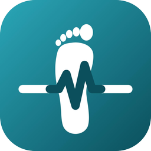

قصة أبو سعد
خطوة · Care that walks with you
قصة توضيحية (46 ثانية) عن مريض سكري افتراضي. الشخصيات والأحداث للتوضيح فقط.
جرّب النموذج التفاعلي
خطوة · Care that walks with you
قصة توضيحية (46 ثانية) عن مريض سكري افتراضي. الشخصيات والأحداث للتوضيح فقط.
جرّب النموذج التفاعلي